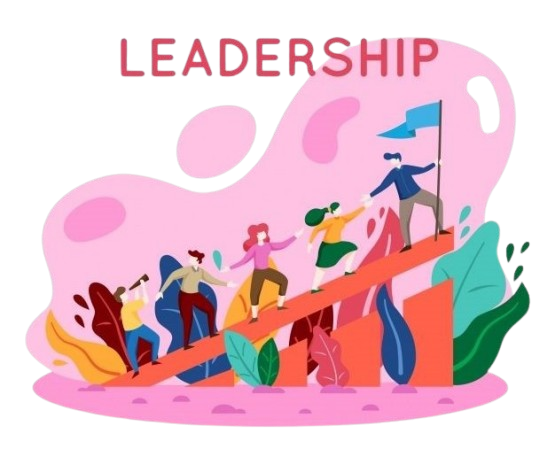

JULIAN CARLO C. MAGBUHAT
COMPUTER SCIENCE STUDENT
Hello! I'm Julian Carlo C. Magbuhat, a passionate computer science student interested in software development. I am 18 years old and eagerly looking forward to turning 19 on October 25, 2025. Currently, I am studying at Batangas State University, located in Alangilan, Batangas City. At my university, I have been consistently exploring innovative ways to solve problems and enhance user experiences through technology.
I have always been driven by a desire to understand how things work and to use that knowledge to create practical solutions. My academic journey has been marked by consistent performance and a thirst for learning. I enjoy working on activities that challenge my thinking and allow me to apply my knowledge in practical settings. When I'm not coding, you can find me reading, watching horror movies, playing video games, cooking, and eating.
My Skills and Expertise
I have developed a solid foundation in several key areas of technology, complemented by my personal experiences and academic journey.
C++
I'm always learning new things with C++. It's become a big part of my skillset, especially when it comes to building super efficient and reliable software. I love that C++ lets me dive deep into the technical details of how systems work, and I'm constantly finding ways to make my code run faster and smoother. It's really rewarding to create powerful solutions with this language!
HTML & CSS
My journey with web development started in high school – I was building a simple bio sheet for a project, and it totally hooked me! Since then, I've been learning how to create websites that look great and work smoothly on any device. I love building interfaces that are both user-friendly and visually appealing. It's so rewarding to see people enjoy using something I've created!
Time Management
Staying organized and on top of things is something I'm really good at. I’m a master at prioritizing tasks, setting realistic goals, and making sure I get things done on time without sacrificing quality. It’s definitely helped me juggle my studies, personal projects, and all my extracurricular activities. I wouldn’t have it any other way!
Resourcefulness
I'm a resourceful person who enjoys finding solutions on my own. I'm not afraid to research, explore different options, and find creative ways to get things done. This independent approach has helped me develop strong problem-solving skills and a willingness to learn.
STRENGTHEN THE MEANS OF IMPLEMENTATION AND REVITALIZE
THE GLOBAL PARTNERSHIP FOR SUSTAINABLE DEVELOPMENT
Sustainable Development Goal 17, or SDG 17, is all about teamwork and collaboration. It recognizes that to tackle the big challenges we face like poverty, inequality, and climate change, we need to work together. No single country or organization can do it alone. This goal emphasizes the importance of building strong partnerships at all levels, whether it’s between countries, businesses, or communities.
One of the main focuses of SDG 17 is to strengthen the means of implementation. This means making sure that countries have the tools, resources, and support they need to achieve the other Sustainable Development Goals (SDGs). For many developing countries, this can be a real challenge. They might struggle with limited financial resources or lack access to the latest technology. By providing the necessary support, we can help these countries make real progress toward sustainable development.
Financing is a huge part of this goal. It’s about finding ways to mobilize money from different sources like governments, private companies, and international organizations to fund sustainable development projects. This could mean investing in things like education, healthcare, and clean energy. Innovative financing solutions, such as partnerships between public and private sectors, can also play a big role in ensuring that funds are available where they’re needed most.
Another important aspect of SDG 17 is the sharing of technology and knowledge. In our connected world, sharing what we know and the tools we have can help countries move forward more quickly. For example, if one country has developed a successful renewable energy project, sharing that knowledge can help others implement similar solutions. By learning from each other, we can all make better progress toward our goals.
Data and accountability are also key components of this goal. To know if we’re making progress, we need reliable data and transparent reporting. This helps ensure that governments and organizations are held accountable for their commitments. When we have good data, we can see where we stand and what still needs to be done to achieve our goals.
Lastly, SDG 17 highlights the importance of multi-stakeholder partnerships. This means bringing together different groups, governments, businesses, civil society, and more to work toward common goals. When we include a variety of voices and perspectives, we can create more effective and inclusive solutions to the challenges we face.
Empowering Youth to Shape a Sustainable Future
Okay, imagine this: you're at a global summit focused on creating a better future for everyone. But something's missing - the voices of young people! They're the ones who will inherit the world we're trying to build, yet they're often left out of the big decisions.
That's where "Youth Voices: Shaping a Sustainable Future" comes in. This project isn't just about giving young people a seat at the table, it's about making sure their voices are heard loud and clear. We're talking about empowering young leaders to not just speak up, but to lead the way towards a more sustainable future.
Think about it: young people are the ones who are most passionate about tackling climate change, social justice issues, and building a better world. They have fresh ideas, innovative solutions, and a powerful drive to make a difference. But they need support, resources, and a platform to share their vision.
That's what this project aims to do. We'll build youth councils and forums, where young people can connect, learn, and hone their leadership skills. We'll host summits like "Youth Climate Summit," where they can brainstorm solutions, share their perspectives, and develop concrete action plans. We'll provide training workshops, mentoring programs, and funding opportunities so they can launch their own projects and initiatives.
By investing in "Youth Voices," we're not just investing in a project, we're investing in the future. We're empowering the "pagasa ng bayan," the hope of the nation, to lead the way towards a sustainable and equitable world. It's about recognizing the power of young people, their creativity, their passion, and their commitment to building a better tomorrow. Let's give them the tools, the platform, and the support they need to thrive.
Facebook Account
Phone Number
0962-461-8631